FigLock logo suite
One master icon, drawn as a padlock with an f on its body, and the assets built from it: mark, wordmark, lockups, app icons for each platform, and social formats. Every file is SVG.
Master icon
The icon is the source for everything else. Its geometry is never redrawn. The flat version is for places where a gradient will not print or render.
figlock-icon.svgfiglock-icon-flat.svgMark
The padlock alone, with the f cut out so the ground shows through. Use it where the squircle would be too heavy.
mark/figlock-mark-color.svgmark/figlock-mark-white.svgmark/figlock-mark-black.svgWordmark and lockups
The wordmark is set in Figtree Bold. The font is embedded in each SVG, so the files look the same everywhere.

lockups/figlock-lockup-horizontal.svglockups/figlock-lockup-horizontal-on-dark.svglockups/figlock-lockup-stacked.svglockups/figlock-lockup-stacked-on-dark.svglockups/figlock-wordmark.svg
lockups/figlock-wordmark-on-dark.svgApp icons
Each platform gets its own file, drawn to that platform's rules, instead of one file resized.
app-icons/figlock-ios-1024.svgapp-icons/figlock-macos-1024.svgapp-icons/figlock-maskable-1024.svgapp-icons/figlock-favicon.svgapp-icons/figlock-android-*.svgapp-icons/figlock-android-monochrome.svgColour
The logo keeps its own blues. The product interface uses a separate primary, so the two are related but not identical.
#4A90F2 to #2E47E2#3050E4#3B5AFE#9FB0FF#10142BUsage
Clear space
- Keep a margin of at least one quarter of the icon's width (x) on every side.
- The same margin applies to the lockups, measured from the icon's edge.
- Place the icon on light or dark grounds with enough contrast. Use the dark-ground lockups on dark.
- Pick the favicon file below 32 px. Use the master icon from 32 px up.
Minimum sizes
Do not
Files
| File | Use |
|---|---|
figlock-icon.svg | Master icon, the supplied code unchanged |
figlock-icon-flat.svg | One-colour background, no gradient |
mark/figlock-mark-{color,white,black}.svg | Padlock alone, f cut out |
lockups/figlock-wordmark[-on-dark].svg | Name only |
lockups/figlock-lockup-{horizontal,stacked}[-on-dark].svg | Icon with name |
app-icons/* | iOS, macOS, Android layers, web maskable, favicon |
social/* | Social card and round avatar |
These are vector files. PNG, ICO and ICNS exports are not included because no raster export tool was available. Export them from the SVGs at the sizes each store asks for.
Social
social/figlock-social-card.svgsocial/figlock-avatar-round.svg